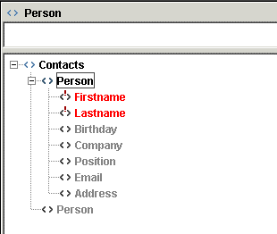

).
).
The Outliner tool supports the rapid generation and easy editing of XML data without having to worry about the actual markup. Currently, mixed content models are not supported so the Outliner is not ideal for editing documents such as DocBook. The Outliner depends on the presence of an XML Schema, so if you are using a DTD or RelaxNG schema, then perform a conversion as outlined in previous sections.
If you haven't already created a Type named Contacts for the Schema Viewer example, then just select Schema->Manage Type and import the Contacts type located at projects/Schema Viewer/type/Contacts.type.
Create a new document using File->New and in the New XML Document dialog select For Type with the Contacts type highlighted.
The new document is opened by default in the Editor. Click on the Outliner button to switch view ().

Figure 1. Initial Outliner View
In the Outliner, optional nodes are gray in color, required nodes are red and existing nodes are black. Double-click on the gray Person node to create a Person element. Notice that the Person node changes from gray to black and another (optional) Person node is diplayed.

Figure 2. New Element in Outliner
Double-clicking on the first (black) Person node causes the element sub-structure to be displayed.
Figure 3. Required Elements in Outliner
Depending on your settings (View->Outliner Properties), there are two possibilities. Firstly, If the Automatically Create Required Nodes field is not set in the Outliner section of the View tab, then the nodes Firstname and Lastname will be displayed in red to hightlight that they are both required elements. Double-click on the Firstname node to create it, and enter the name "Tom" in the textfield at the top of the Outliner view. Press the Esc key to complete data entry.

Figure 4. Data Entry in Outliner
The second possibity arises when the Automatically Create Required Nodes field is set in the Outliner properties (View->Outliner Properties), then the nodes Firstname and Lastname will have been created. Click on the Firstname node and enter the name "Tom" in the textfield at the top of the Outliner view. Press the Esc key to complete data entry. Next, click on the Lastname node and enter the name "Smith" in the textfield, again pressing the Esc key to complete data entry
Now create some more elements. Add a Birthday element and enter 1965-03-29 as the content - note: the content must match the XML Schema type for date. Add an Address and fill in the required type attribute (for example work or home) and the required elements such as Street, City and Country. In the schema definition for Address, there is a choice between PostCode and ZIP. Once the user chooses to create one of these elements, the other will automatically be removed from the Outliner.
At any stage, you can switch to the Editor to see the text version of what has been created.
All navigation and data entry in the Outliner can be achieved using the keyboard alone, instead of switching between the keyboard and mouse. Use the Right-Arrow key to expand a node in the tree, Up-Arrow and Down-Arrow to move vertically in the tree, Left-Arrow to collapse a node, Enter to create an element or attribute, Esc to complete data entry for an element and Delete to remove an element and its substructure.